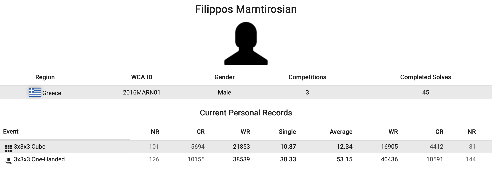
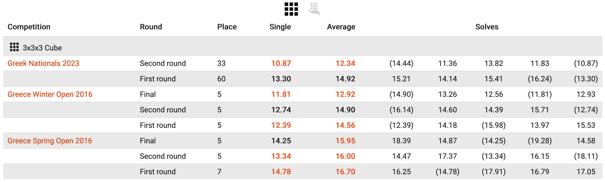

Rubik's Cube
Attended three Rubik's Cube competitions in Greece!
I came 5th place twice, and my unofficial personal best time is 7.20 seconds. My official PB is 10.87 seconds :)
This is my WCA (World Cube Association) Profile:
Link to Profile

